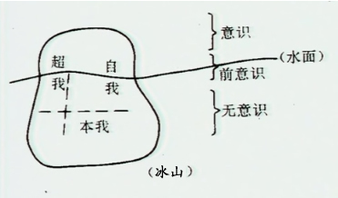

00:00
第四章 变态心理学与健康心理学知识
本章重点
1.如何区分正常心理和异常心理
2.心理异常有哪些具体表现形式
3.心理冲突的常形和变形
4.压力的性质、作用机制以及对健康的影响
第一节 关于变态心理学
一、人的心理活动存在正反两方面
个体：正常心理活动/异常心理活动
群体：心理正常群体/精神障碍群体
二、正常与异常心理活动可以相互转化*
1.精神障碍的人，他的心理活动也并非全是异常；
2.精神障碍的人经过系统治疗，心理异常部分可以得到改善或完全被矫正；
3.正常活动和异常活动在人群中会永远并存。
案例-1奇怪的聪明人
患者男性，24岁，因疑人害己6个月余，由母亲陪同就诊。
02:22
患者：医生，有人要害我。
医生：是谁要害你呢？
患者：我家附近那条街上的电器商店里的人在监视我。前不久有一天，我路过时有一个店员微 笑着对我说“你好！”我不明白，我和他从来没见过面，他怎么会认识我？之后我就不走那条路了，宁可绕远。但这样也不行，一天晚上我在家上网，一打开电脑就发现首页上有这家电脑商店的广告，让我大吃一惊，不知道他们如何将广告放到我的电脑里的。于是，我就开始调查这个公司，更可怕的是，我每次登录他们的网页时，他们就会指名问候我。现在，我发现街上的人都在监视我，无论在哪，都有人认出我，太不可思议了。
家属：他通过各种手段，调查了有关这个公司的大量资料，做事很有思路，头脑很聪明的，应该没有病吧？
第一单元 变态心理学的研究对象
一、定义
是心理学的分支学科。
研究对象是心理和行为的异常表现。
二、研究内容
1.心理异常的定义
2.心理异常的发生
3.心理异常的种类**
4.心理异常的性质和特点**
05:56
三、变态心理学与精神病学的异同*
|
变态心理学 |
精神病学 |
侧重点 |
基本性质、特点，个体心理差异及环境对异常心理发生、发展的影响 |
诊断、治疗、转归、预后、预防、康复 |
学科性质 |
基础 |
临床 |
第二单元 学科简史
对心理异常的早期关注
对心理异常现象的现代说明*
精神分析学派**
行为主义学派*
人本主义学派
一、精神分析学派**
08:20
（一）两个基本命题
命题1**
心理过程主要是潜意识的。
潜意识
一切意识行为的基础是一种无意识的心理活动。意识的心理过程仅仅是整个心灵的分离的部分和动作。
无意识对人的行为产生重要影响。
命题2
性冲动是神经症和精神病的主要起因
性的冲动
广义：作为希腊神话中的爱神厄洛斯的性，是指一切与爱字有关的那些本能的力量，自爱和父母的爱，子女的爱以及人类的一般的爱。
狭义：是生物本能的性，包括三个区域：口唇区，肛门区和生殖区，分别与生物的三种基本需要的满足相对应，即摄食、排泄与繁衍后代。
性的冲动，广义和狭义的，都是神经症和精神障碍的重要起因。
（二）五个推断
1.心理活动的动力——力必多（libido）。
2.性心理的三个发展阶段：口欲期、肛欲期和生殖器期。
3.心理结构：潜意识、前意识和意识。
4.人格结构：本我、自我和超我。
5.心理防御机制
12:04
推断1：力必多
力必多（libido）是指人类所有的本能力量或能量。
精神分析的核心是本能（力必多）决定论，即人的一切行为，都是由人的本能决定的，都是在本能的驱使下，力必多的转移与分配的结果。
当力必多的转移与分配持续受阻的时候，快乐原则无法实现，就会感受到焦虑、痛苦，这种状态即为病态、心理障碍。
推断2：性心理的三个发展阶段
1.口欲期（0-1岁）
2.肛欲期（2-3岁）
3.生殖器期（4-5岁）
性本能在出生到5岁左右的这段时间经过三个阶段。
儿童期的三个阶段是个体人格发展的关键时期；
其中每一个阶段中如果受到挫折过多，便会造成相应的心理障碍。
推断3：心理结构
1.无意识（潜意识）
（1）指人们对自己的一些行为的真正原因和动机不能意识到；
（2）指人们在清醒的意识下面还有潜在的心理活动在进行着。
2.前意识
介于意识与无意识之间，其中的观念暂不属于意识，但随时能够变成意识。即其中的经验经过回忆是可以记起来的。
14:36
3.意识
是可以直接感知到的有关的心理部分。只是一个人心理活动有限的外显部分，好比冰山一角。 人的心理活动中的意识、无意识（潜意识）和前意识之间保持着一种动态的平衡；
前意识之中的内容与意识之间的内容的相互转换非常容易，是转瞬即成的事情；
无意识（潜意识）的内容要进入意识中则非常困难，在意识之中似乎有一种抵抗力，起着“检察官”或“看守员”的作用，严防无意识（潜意识）中的观念（思想和欲望）进入意识部分。
15:38
推断4：人格结构
1.本我
处于意识的最深层，是由一切与生俱来的本能冲动所组成，人格中最原始、最模糊和最不易把握的部分。其活动受“快乐原则”的支配，寻求无条件、即刻的满足。
2.自我
从本我中分化出来的一部分，一部分是无意识的，而主要是意识的，自我是现实化了的本能，受“现实原则”的支配，指导行为采取社会允许的方式满足本我的需要。
3.超我
是从自我中分出来的一部分，大部分是无意识的，是父母权威的内化。受“道德原则”支配，是道德化了的自我，能进行自我批判和道德控制，主要作用是监督和控制自我。
人格的三种构成不是静止的，而是不断交互作用着；
“本我”是求生存的必要的原动力，“超我”监督、控制本我的动力，按照社会道德标准行事。而“自我”对上按超我的要求去做，对下吸取本我的动力，调整其冲动欲望，对外适应现实环境，对内调节心理的平衡。
健康的人格中，三种结构的作用是均衡、协调的；
三种力量不能保持动态平衡，将导致心理失常的发生。
18:15
人格结构与心理结构

推断5：防御机制
自我要同时满足三个严厉的主人，使现实能够允许、超我可以接受、本我能够满足，如果难以承受压力，其反应便是焦虑。
焦虑的产生，促使自我发展出一种机能，用一定方式调解冲突，缓和三种压力对自身的威胁，这种机能就是心理防御机制。
压抑：为社会伦理道德所不容的冲动、欲望，在不知不觉中被压抑到潜意识之中，使人自己意识不到其存在。
案例2：训练伤引发的……
战士小张，训练刻苦，好强上进，在连队组织的400米障碍训练翻越阻绝墙时扭伤了腰，经休息一段时间后完全恢复了。5个月后，参加越野拉练时，突然感到腰部不适、双腿发麻，于驻军医院检查未见异常。
22:19
（三）三个原因
1.固着*
性心理的发展过程如不能顺利进行，停滞在某一发展阶段，即发生固着。
2.焦虑
三个“我”的冲突即产生焦虑。
3.压抑
将道德所不容的冲动、欲望，压抑到潜意识之中。
二、行为主义学派**
重点掌握：
早期记载
技术路线
提出神经症和精神病的区别
（一）早期记载
 巴甫洛夫连续30年运用“条件反射”研究动物的行为、心理活动，建立了高级神经活动的新学说。
巴甫洛夫连续30年运用“条件反射”研究动物的行为、心理活动，建立了高级神经活动的新学说。
用高级神经活动学说来说明人的异常心理现象，是行为主义心理学介入变态心理学的早期记载。
24:07
经典条件反射
条件反射实验
食物——流唾液（无条件反射）
食物——节拍器——流唾液
节拍器——流唾液（条件反射）
节拍器、无食物——不流唾液
对异常行为的解释
椭圆物——流唾液
圆形物——不流唾液
椭圆逐渐接近正圆形——辨认困难——精神紊乱
（二）技术路线
通过动物实验的结果，演绎和推论人的心理，再以人为实验对象，研究其行为并与动物实验结果相比较，这是行为主义心理学研究工作的一般技术路线。
按照这种技术路线，发展出斯金纳的操作条件反射以及他的各类学习理论。
（三）提出神经症与精神病的区别
神经症和精神病的原因，是兴奋和抑制这两个基本神经过程的冲突造成的。
神经症与精神病的区别是在神经活动障碍的复杂性上或精细特征上的区别。
三、人本主义学派*
重点掌握
核心概念：强调每个人内心都有自我实现潜能。
29:07
心理异常：潜能趋于完善的过程受阻。
存在焦虑：存在与责任冲突，是心理异常的基本表现形式。
 罗杰斯（C.Rogers）是人本主义的开创者，也是最重要的人物之一，提出了个人中心式人格理论。其核心是自我实现的概念：不断努力实现固有的发展能力和才能，从而最大限度地发挥、表现个人潜能。人应该成为自我完善的人。
罗杰斯（C.Rogers）是人本主义的开创者，也是最重要的人物之一，提出了个人中心式人格理论。其核心是自我实现的概念：不断努力实现固有的发展能力和才能，从而最大限度地发挥、表现个人潜能。人应该成为自我完善的人。
好的人生，是一种过程，而不是一种状态，它是一个方向，而不是终点。